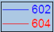

FAQ-726 凡例のテキストの色をシンボルの色に揃えるには？
same-text-and-symbol-color-in-legend
下の図のように、凡例のテキストの色をシンボルの色に揃えたい場合、２種類の方法があります。
- 
- 凡例の上で右クリックし、凡例： プロットに従ったテキスト色を選択します。
- フォーマットツールバーでフォントの色を自動にセットするか、凡例を右クリックしてコンテキストメニューからプロパティを選択し、オブジェクトのプロパティダイアログ色を自動にします。
必要なOriginのバージョン:2016SR0
キーワード：凡例のテキストカラー, 凡例のシンボルカラー
最終更新日:2016/09/22